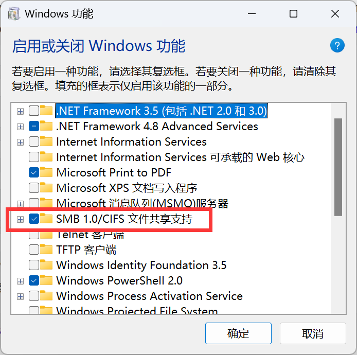
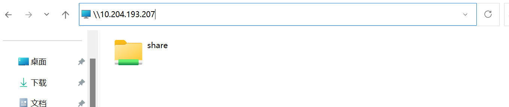
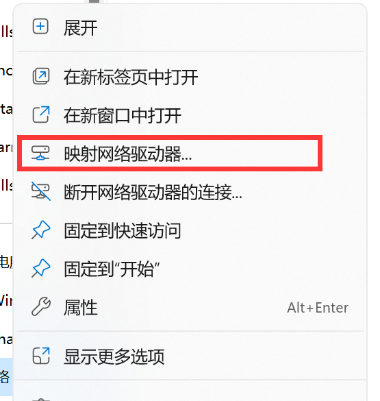

搭建samab服务器
1.搭建samba服务器
服务器系统：Ubuntu22.04
安装samba软件包
1
2sudo apt update
sudo apt install samba配置Samba共享
编辑Samba配置文件
1
sudo vim /etc/samba/smb.conf
在文件的末尾添加共享配置
1
2
3
4
5
6
7
8
9
10
11[share]
comment = Shared Folder
path = /path/to/shared/folder
browseable = yes
create mask = 0777
directory mask = 0777
valid users = your_username
public = yes
read only = no
available = yes
writable = yes
创建Samba用户：
使用以下命令创建一个samba用户（与系统用户相关联）：
1
sudo smbpasswd -a your_username
将
your_username替换为要创建的Samba用户的用户名
重启Samba服务：
1
sudo systemctl restart smbd.service
至此，Samba服务器就已经搭建完成了，其他设备可以通过ip和共享文件夹名称访问Samba.
2.Ubuntu连接Samba服务器
确保已经安装了
cifs-utils软件包：1
2sudo apt update
sudo apt install cifs-utils创建用于挂在Samba共享的本地目录：
1
sudo mkdir /mnt/smbshare
可以选择在其他位置创建目录，只需确保目录存在并且有足够的权限。
挂载Samba共享：
用以下命令来挂载Samba共享：1
sudo mount -t cifs //server_ip/share_name /mnt/smbshare -o username=samba_username,password=samba_password
- 将
server_ip替换为Samba服务器的IP地址。 - 将
share_name替换为Samba服务器上的共享名称。 - 将
samba_username和samba_password替换为具有访问权限的Samba用户名和密码。
- 将
输入密码（如果需要）。
现在，就可以通过访问
/mnt/smbshare目录来访问Samba共享中的文件。
这种挂载方法会存在问题：在ubuntu中访问共享文件时需要root权限才能写入数据，普通用户无法进行修改写入。
解决方法：
在挂载Samba共享时制定其他用户的访问权限：
打开终端并使用root权限编辑
/etc/fstab文件：1
sudo vim /etc/fstab
在文件的末尾添加一行来定义Samba共享的挂载选项：
1
//<samba_server_ip>/share /mnt/smbshare cifs username=<samba_username>,password=<samba_password>,uid=<your_username>,gid=<your_group>,iocharset=utf8,vers=3.0 0 0
- 将
<samba_server_ip>替换为Samba服务器的ip - 将
<samba_username>替换为Samba共享的用户名 - 将
<samba_password>替换为密码 - 将
/mnt/smbshare替换为想要挂载的本地目录 - 将
<your_username>替换为自己的用户名 - 将
<your_group>替换为所在的用户组
- 将
保存并关闭
/etc/fstab文件。使用如下命令重新挂载文件系统：
1
sudo mount -a
现在就能够以普通用户在Samba共享文件系统中写入文件。
3. Windows连接Samba服务器
在
Windows功能中启用SMB功能。
通过
\\+ip的方式访问：
回车后输入用户名和密码就可以看到共享文件夹。
映射到磁盘：
写入：

点击完成，就可以在计算机界面看见映射成功的磁盘了。
All articles in this blog are licensed under CC BY-NC-SA 4.0 unless stating additionally.
Related Articles